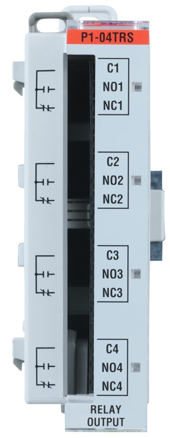

This function writes the state of a single channel.
P1.writeDiscrete(HIGH,1,2); // Turn on slot 1 channel 2This function writes the state of all 4 channels. It turns channels 1-3 on and turns channel 4 off.
P1.writeDiscrete(0x07, 1); // Write state of all channels for slot 1Compatible Functions
- ch.value
- module.values
- module.do_bitmapped()
- base.writeDiscrete()
Properties and Methods
Module Configuration and Status Tables
This module does not provide any status data and does not require configuration.

Channels: 4
Discrete Output Type: 4 Relays - FORM C (SPDT)
Rated Voltage: 30 VDC, 100-240 VAC
Example:
Arduino
CircuitPython
Additional Resources:
Data Sheet
P1-04TRS on AutomationDirect.com